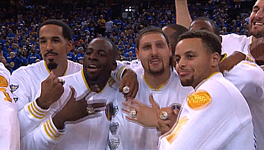

La Racha de Victorias de los Golden State Warriors
Durante la temporada 2015-2016, los Golden State Warriors establecieron un récord de la NBA al ganar 73 juegos en la temporada regular, superando la marca anterior de 72 victorias establecida por los Chicago Bulls en la temporada 1995-1996.